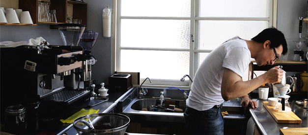
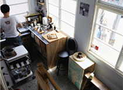
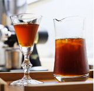
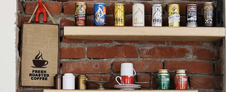

達人：PEPE
秘密基地的迷人咖啡香
這裡的咖啡可以品嚐到義式、手沖或虹吸式 價錢約為100元上下， 想要自己嚐試煮咖啡當然也是可以
斗侍，取其音為斗室，將室換成侍之意，據說因高人指點，取"室"這個字，易生口舌之爭，故索性改成"侍"，兼有多方意涵。斗侍在閏風箏美術工作室旁的二樓，閏風箏說，這個老空間的前人是台灣早期的詩人，房東則是成大退休的化工教授，兒女多在國外，而房東久居桃園，久久才回來灑掃看顧，閏風箏的負責人很喜歡這棟房子，卻不知如何聯絡房東，只好將自己的心意寫在紙上，放入瓶中，置於庭院，沒想到房東看到信而深受感動，主動打電話給閏風箏，並將空間租給閏風箏美術工作室。
斗侍的負責人squda與閏風箏的負責人為同學關係，商借了二樓做為咖啡空間，二樓的空間真的很迷你，是房東後來加蓋的小孩房，特色是大量開窗，少見的魚鱗花紋的玻璃在這兒看得到，白日在室內可追逐陽光飄移的光影，雖熾熱日光在不同時間灑落在不同角落，卻不會讓人感到不愉快，不論是白天或晚上，巷道裡的街景事物，或是晴日星空，倚在窗旁自有其景，空間雖小，卻因看得到天空，反而延伸開闊視野，狹擠窄小似乎不適合用來形容斗侍的空間，我們比較喜歡用悠閒自在來比擬這裡的感受，座位雖少，但squda貼心的在座位下方放置置物藤籃，讓那天帶了大包小包
的我悠遊其中，而且意外的發現，樓梯扶手當作椅子恰恰好，離吧台也近，已經變成每次去的專屬位子了。
這裡的咖啡可以品嚐到義式、手沖或虹吸式，價錢約為100元上下，想要自己嚐試煮咖啡，當然也是可以。斗侍也提供烘豆機，自備生豆來斗侍烘豆，1.5 小時250元。沒有生豆也無妨，選豆子再加150元，就可烘出個人風格的咖啡豆。(squda說之後想改成讓客人自己押錢，你認為這杯咖啡多少，就付多少) 這樣的經營模式squda自嘲"前無古人，後無來者"，成功的話，是第一個人，失敗的話，以後也沒有人會這麼做！
斗侍咖啡
| 地 址： | 地址不方便公開，因斗侍空間不大，須電訪詢問地址。 |
| 電 話： | 0988-162-298 （星期二休） |
| 交通方式： | 坐火車到台南車站，步行前往約15-20分鐘， 或搭計程車5分鐘。 |